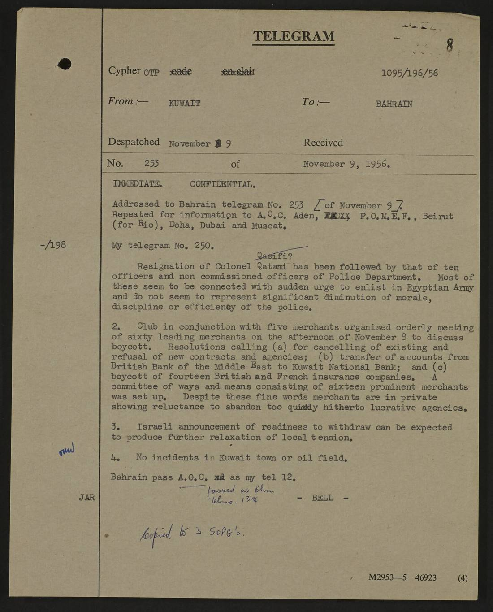
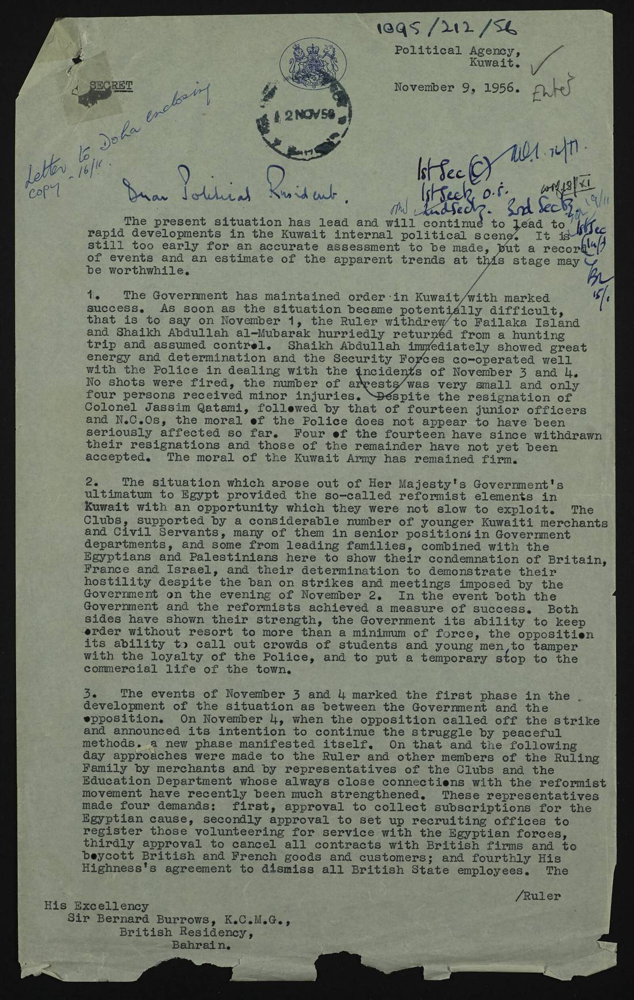

نوفمبر ١٩٥٦ · برقية من الكويت إلى البحرين في ٩ نوفمبر ١٩٥٦، وتقرير بريطاني عن الأحداث في الكويت
استقالة العقيد جاسم القطامي خلال أزمة السويس
ما هي
خلال الاحتجاجات على العدوان على مصر استقال العقيد جاسم القطامي من رئاسة الشرطة. ويذكر البريطانيون أن عشرة ثم أربعة عشر من الضباط وضباط الصف تبعوه، وأن التجار اجتمعوا لتنظيم مقاطعة الشركات البريطانية والفرنسية.
أهميتها
التسجيل البريطاني للحظة ترك جاسم للشرطة، وهي من أشهر مواقف حياته.
من المقصود
هو جاسم القطامي نفسه الوارد اسمه الكامل في وثائق أخرى: مدير الشرطة الذي استقال وقت أزمة السويس، ثم النائب القومي في مجلس الأمة.
صور الصفحات


النص الأصلي
المصادر
الأرشيف الوطني البريطاني في لندن، رقمنه الأرشيف الرقمي للخليج العربي (agda.ae). الصور منشورة بإذن من الأرشيف الوطني البريطاني.
مرجع الأرشيف
- FO 1016/479 · Repercussions of Israeli attack on Egypt. Includes 10 photographs depicting: Damage to pipeline and oil fire at Umm Bab, Persian Gulf. Dated [1956].
- FO 1016/480 · Repercussions of Israeli attack on Egypt
كيف كُتب هذا النص: نُسخ من قراءة الأرشيف لنص الصورة، وصُحح بالمقارنة مع الصورة حيث كانت القراءة مشوهة. وتشير … إلى نص محذوف. الترجمة العربية من Claude، يرجى مراجعتها.
افتح في الموقع التفاعلي